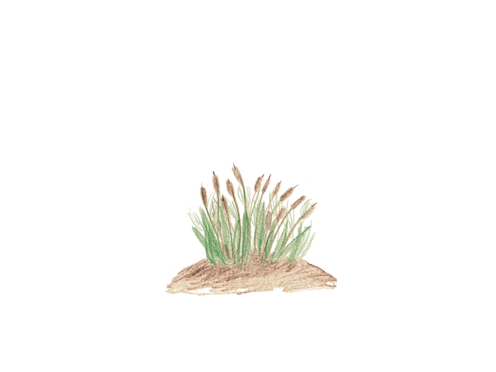

PLAN DE L'EXPO

Un satyre dans la mythologie grecque est un personnage mi-homme, mi-bouc.
Une lyre est un instrument à cordes. Dans la mythologie grecque, le dieu Hermès invente la lyre et l'offre ensuite à Apollon.
Subtile veut dire délicat, fin, raffiné.
Le dieu Pan, joyeux , vagabonde dans les
montagnes et les bois, accompagné par le roi Midas.
Dans les forêts du mont Tmole, il s'amuse en jouant
de sa flûte légère.
Il préfère cet instrument simple à la d'Apollon,
dieu des arts et de la musique.
Pan propose à Apollon
un duel musical : flûte conte lyre,
à chacun de prouver ses talents.
Apollon acceptera-t-il de se mesurer à Pan ?
Tu t'es trompé, Apollon est trop fier pour refuser ! Il accepte, bien sûr.
Retourne au choix précédent !
Apollon est fier, il accepte.
Pour décider de qui jouera le mieux, il faut un juge.
Qui choisissent-ils, Midas ou le dieu du mont Tmole ?
Dans l'histoire, c'est le dieu du mont Tmole qui est choisi.
C'est un vieux sage assis sur sa montagne.
Midas ne peut être que spectateur du concours.
Retourne au choix précédent !
Pour mieux écouter, le vieux Tmole écarte la forêt qui couvre sa tête et annonce :
"Le juge est prêt."
Pan se met alors à souffler dans sa flûte.
C'est ensuite au tour d'Apollon,
qui joue un air sur sa lyre.
Le dieu du mont Tmole désigne Apollon meilleur musicien ;
la lyre est selon lui plus et plus belle que la flûte de Pan.
Midas a assisté au concours, il a lui aussi écouté les dieux jouer.
Midas est-il d'accord avec le juge ?
Midas contredit le mont Tmole ; pour lui, la musique de Pan est bien plus belle que celle d'Apollon !

Cela lui aurait évité des problèmes, mais ce n'est pas ce qui s'est passé.
Retourne au choix précédent !
Midas est obligé de cacher ses oreilles sous une large coiffe,
mais il ne peut tromper la personne qui lui coupe les cheveux.
Le coiffeur voudrait bien révéler ce qu'il sait, cependant il n'en a pas le droit !
Alors il s'éloigne, creuse un trou dans la terre et y murmure le secret avant de le reboucher.
Or, un an plus tard, des roseaux ont poussé à cet endroit.
Quand le vent les agite, il répète ces mots confiés à la terre :
"Le roi Midas a des oreilles d'âne".
Quelles conclusions peut-on tirer de cette histoire ?
D'abord, même si la punition semble
amusante, c'est une humiliation sévère et
gratuite pour le pauvre Midas.
Apollon a eut tort de réagir si violemment, il a
eu tort de se vexer et de s'en prendre à Midas.
Ce n'est pas parce que tu en as le pouvoir que
tu peux humilier quelqu'un.
Midas a-t-il vraiment mérité cette punition ?
Il aurait du réfléchir avant de contredire
le juge, mais il avait le droit de préférer
la musique de Pan : personne ne devrait
être condamné à cause de ses goûts
et chacun a le droit d'avoir ses propres opinions.
Même si ce n'est pas facile, tu dois accepter
que l'on ne pense pas toujours comme toi.
Quant au coiffeur, il prouve qu'il est
difficile de garder un secret.
Peu importe à qui tu le répètes, si tu
ne tiens pas ta langue, le secret finira
sûrement par être révélé.